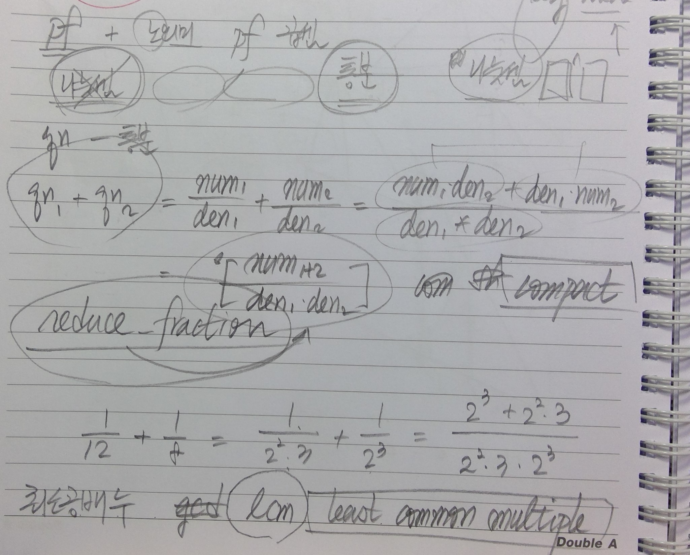
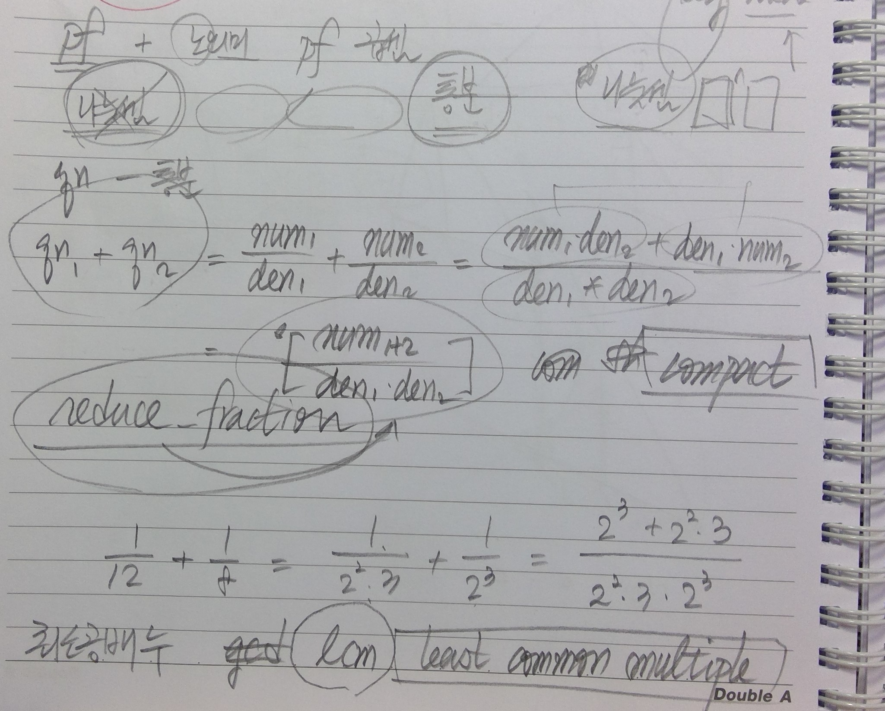

누구든 마음 한 편엔 '은전 한 닢'을 가지고 싶은 법이다.
10/14/2020
처음 시작은 π를 구하는 코드였다.
아르키메데스로 연원이 거슬러가는 이 유서 깊은 값을 이런 저런 방법 ( π 는 대체 얼마?, 또 다른 π 에 대한 근사값) 등으로 구해 보면서 실제 π 값에 얼마나 빠르게 근사하는지 보고 있었다.
각각의 방법을 반복을 해 가면서 계산 결과와 3.141592... 의 차를 비교해 보던 중, 갑자기 머리에 쥐가 나면서 부동 소숫점 자료형을 쓰는 이상 엄밀하게는 정밀도의 의미가 없다 - 표현할 수 있는 값도 제한되고 일정 수준 이하로 근사시킬 방법이 없다 란 깨달음을 참으로 일찍도! 얻었다.
물론 그 다음 순간 그러면 고정 소수점 타입의 자료형을 사용하면 원하는 수준 만큼의 정밀도를 얻을 수 있잖아 라고 하면서 그래 다 이렇게 제한된 근사치로도 저 멀리 달도 갔다 오고 그러는 거지 라고 스스로를 위안했다. (java.math.BigDecimal)
아르키메데스로 연원이 거슬러가는 이 유서 깊은 값을 이런 저런 방법 ( π 는 대체 얼마?, 또 다른 π 에 대한 근사값) 등으로 구해 보면서 실제 π 값에 얼마나 빠르게 근사하는지 보고 있었다.
각각의 방법을 반복을 해 가면서 계산 결과와 3.141592... 의 차를 비교해 보던 중, 갑자기 머리에 쥐가 나면서 부동 소숫점 자료형을 쓰는 이상 엄밀하게는 정밀도의 의미가 없다 - 표현할 수 있는 값도 제한되고 일정 수준 이하로 근사시킬 방법이 없다 란 깨달음을 참으로 일찍도! 얻었다.
물론 그 다음 순간 그러면 고정 소수점 타입의 자료형을 사용하면 원하는 수준 만큼의 정밀도를 얻을 수 있잖아 라고 하면서 그래 다 이렇게 제한된 근사치로도 저 멀리 달도 갔다 오고 그러는 거지 라고 스스로를 위안했다. (java.math.BigDecimal)
하지만 이래나 저래나 13 을 말 그대로 정확히 표현 못하는 건 마찬가지 아닌가 란 생각에서 뭐 대충
먼저 유리수란 무엇인가 를 떠올리며 뭐, 유리수란 게 Q = n/m (단 n, m은 서로 소인 정수)아니야? 로 시작했다.
그런 후 그럼 정수는 뭐야? 가 되면서 정수 Z 란건 그냥 0부터 9까지 10개의 문자가 임의의 길이로 연결된 문자열이지 라고 정의하고 서로 소 인걸 알아내려면...
소수인지 여부를 확인할 방법을 구현하기로 했다. 그러고 보니 크기 비교와 사칙연산은 당연히 필요하게 되었다.
나눗셈을 어찌 할 까 하다가 뭐 대충 소수 라고 알려진 숫자들을 차례로 젯수에 곱해서 피젯수가 나올 때 까지 찾아보기로 했다. (이미 효율성은 안드로메다로 출발한 셈이다.)
대충 정수는 된 것 같으니 본격적으로 정수의 비 로 유리수를 정의하려고 보니 이제 정수의 소인수 분해 폼이 필요하게 되었다.
잠시 정수 내에 소인수분해를 넣으려 생각하다가 모든 정수가 소인수 분해가 필요한 것도 아니고 해서 PF (PrimeFactorization) 란 클래스를 따로 만들기로 했다.
여기까지 나오고 나니 유리수 Q 는 PF/PF 로 표현할 수 있고 이제 Q의 사칙 연산을 Z 과 PF의 조합으로 표현할 수 있다.

그래서 결론은 갑자기 급발진 같기는 하지만 이미 피곤한 관계로
네, 분수 계산기입니다.
어찌되었건 이걸 다 하고 난 후 곰곰히 다시 "나는 왜 이런 짓을 하면서 시간을 버렸나" 를 생각해 보았는데 아무리 생각해도 이건 그냥 나의 은전 한 닢 이었던 것 외엔 설명이 되지 않았다.
유리수 를 표현하는 자료형과 연산을 구축해보자란 결심을 했다. 그러지 말았어야 했다. 하지만 한글날이 금요일이라 3일 연휴가 된 것이 잘못이다.
먼저 유리수란 무엇인가 를 떠올리며 뭐, 유리수란 게 Q = n/m (단 n, m은 서로 소인 정수)아니야? 로 시작했다.
그런 후 그럼 정수는 뭐야? 가 되면서 정수 Z 란건 그냥 0부터 9까지 10개의 문자가 임의의 길이로 연결된 문자열이지 라고 정의하고 서로 소 인걸 알아내려면...
소수인지 여부를 확인할 방법을 구현하기로 했다. 그러고 보니 크기 비교와 사칙연산은 당연히 필요하게 되었다.
나눗셈을 어찌 할 까 하다가 뭐 대충 소수 라고 알려진 숫자들을 차례로 젯수에 곱해서 피젯수가 나올 때 까지 찾아보기로 했다. (이미 효율성은 안드로메다로 출발한 셈이다.)
대충 정수는 된 것 같으니 본격적으로 정수의 비 로 유리수를 정의하려고 보니 이제 정수의 소인수 분해 폼이 필요하게 되었다.
잠시 정수 내에 소인수분해를 넣으려 생각하다가 모든 정수가 소인수 분해가 필요한 것도 아니고 해서 PF (PrimeFactorization) 란 클래스를 따로 만들기로 했다.
여기까지 나오고 나니 유리수 Q 는 PF/PF 로 표현할 수 있고 이제 Q의 사칙 연산을 Z 과 PF의 조합으로 표현할 수 있다.

그래서 결론은 갑자기 급발진 같기는 하지만 이미 피곤한 관계로
네, 분수 계산기입니다.
어찌되었건 이걸 다 하고 난 후 곰곰히 다시 "나는 왜 이런 짓을 하면서 시간을 버렸나" 를 생각해 보았는데 아무리 생각해도 이건 그냥 나의 은전 한 닢 이었던 것 외엔 설명이 되지 않았다.
설마 그런 사람은 없겠지만 이 코드는 https://github.com/heetakchoi/volken에서 찾아볼 수 있다.
관계된 코드는
관계된 코드는
- /lib/Volken/ZN.pm - 정수 표현형
- /lib/Volken/PF.pm - 정수의 소수 제곱의 곱 표현형
- /lib/Volken/QN.pm - 유리수 표현형
- /usage/zn.pl - 정수 사칙 연산 계산
- /usage/pf.pl
- /usage/qn.pl - 유리수 사칙 연산